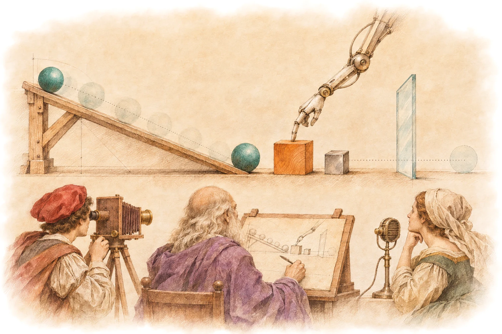
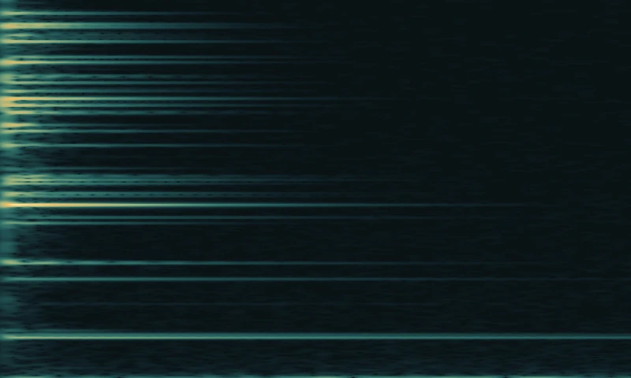
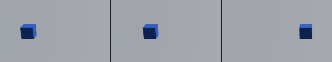
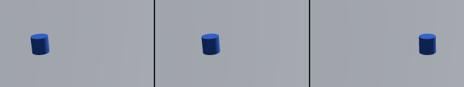

What Do Foundation Models Know About Physics?
We probe vision, touch, and sound to find which physical signals models encode, how those signals transfer, and which ones drive a prediction.

- 1 Properties
- 2 States
- 3 Dynamics
- 4 Events
- 5 Prediction
- vision
- touch
- sound
Study design
Reading physics from
frozen features.
A frozen encoder turns images, touch, or sound into features. A small readout measures which physical properties those features reveal. Changing the observations and editing the features test how far that evidence carries.

Vision
All 16 visual models recover object mass. Their errors range from 0.71 to 1.34 bits, against 3.42 bits for a constant prediction.

Touch
SPARSH-MAE distinguishes materials by touch at 0.949 AUROC. I-JEPA, trained on images, reaches 0.947.

Sound
Material discrimination from impact sounds reaches 0.736 mean AUROC. A random-weight audio encoder reaches 0.704.
The photograph and contact imprint show the same RCT material. The spectrogram shows the first 300 ms of a RealImpact recording.
Observation controls
Same mass.
Different shape.
A box-trained mass readout falls below the mean baseline on cylinders. Fitting the readout to cylinder features restores its score. The encoder stays frozen throughout.
Fixed uses the original readout. Refit learns a new readout on the changed observations. A negative R² scores below a constant mean prediction.
Matched trajectories
Two shapes slide under the same applied force. The camera and sampling times are identical.
- Mass
- 0.50 kg
- Force
- 3.0 N


Event judgments
Seeing a collision.
Judging a violation.
All six models expose evidence of observed collisions. Judging whether solid objects pass through each other stays close to chance across the same models.
| Model | Non-penetration | Collision |
|---|---|---|
| DINOv3 ViT-L/16 | 0.518 | 0.856 |
| V-JEPA 2.1 ViT-L | 0.547 | 0.969 |
| Qwen3-VL 8B · visual | 0.540 | 0.815 |
| VGGT 1B | 0.549 | 0.826 |
| LTX-2.5 | 0.552 | 0.904 |
| Cosmos-Predict2.5 2B | 0.585 | 0.886 |
Non-penetration uses IntPhys2 physical-consistency judgments. Collision recognition uses Something-Something v2. Chance AUROC is 0.50.
Feature interventions
Which signals change
a prediction?
In 48 eligible tests across six models and three scenes, we remove features associated with a physical variable and measure the change in a fixed predictor’s performance.
Governing parameters & speed
≥64%of the oracle performance drop after deletion
Position & orientation controls
≤2%of the oracle performance drop after deletion
The oracle measures the drop in future-prediction R² after erasing features associated with the future target itself. Position and orientation are readily decoded, yet deleting their components has little effect on these predictions.
Frozen V-JEPA 2.1 predictor
Editing friction-linked features shifts the forecast.
Deleting friction-linked features reduces future-displacement R². Deleting position changes it by less than 0.01. Friction and terminal speed covary in these trajectories, so either can contribute to the effect.